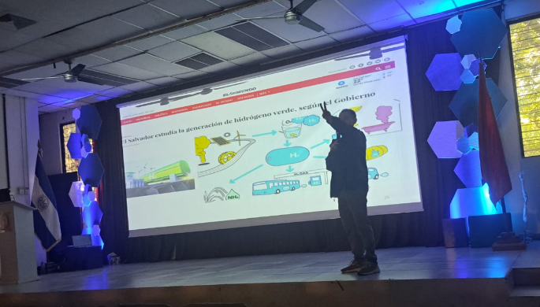

Ponencia 2: Energías alternativas y eficiencia energética
Ponencias16/11/2026CGcq22003 y gb23003

Lugar: Auditorio 1, 1:00 p. m - 4:00pm.
Tema: Energías alternativas y eficiencia energética.
Expositor: Dr. Carlos Osmin Pocasangre Jiménez.
Ideas centrales: La importancia de medir para gestionar el consumo energético, los beneficios de la eco-eficiencia, el contexto de la matriz eléctrica nacional y las nuevas apuestas tecnológicas limpias.
Aprendizajes:
Medir para gestionar: Partiendo de la premisa del filósofo William Pepperell Montague ("Lo que no se puede medir, no se puede gestionar"), entendimos que cualquier estrategia de ahorro energético comienza por monitorear y cuantificar el consumo real.
El impacto integral de la eficiencia energética: Implementar soluciones eco-energéticas no solo reduce la factura eléctrica, sino que mejora el confort y la calidad de vida, resulta amigable con el medio ambiente, es sostenible en el tiempo y se alinea directamente con los Objetivos de Desarrollo Sostenible (ODS).
Buenas prácticas vs. improvisación: A través de ejemplos cotidianos (e incluso humorísticos), vimos cómo una mala instalación o soluciones improvisadas en climatización disparan el desperdicio energético, demostrando que la técnica y el diseño correcto son indispensables.
El panorama energético de El Salvador: Revisamos datos oficiales de generación eléctrica (SIGET) junto con las tendencias y proyectos emergentes en el país, desde soluciones descentralizadas de aprovechamiento orgánico (como los biodigestores domésticos Homebiogas) hasta estudios de gran escala sobre generación de hidrógeno verde y energía nuclear